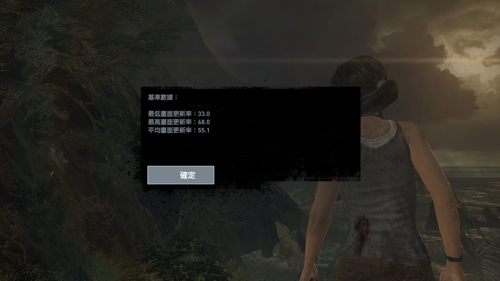
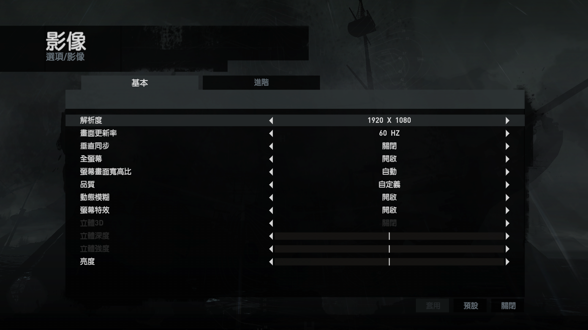
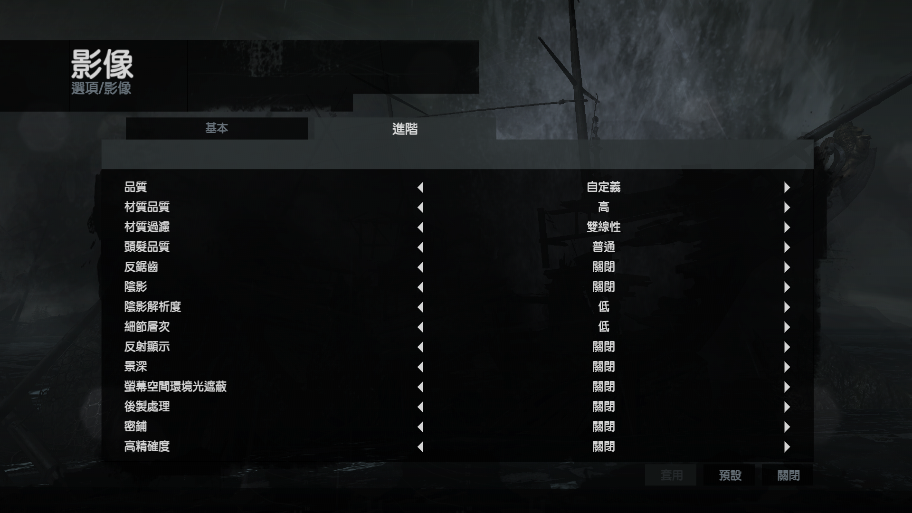

准备工作
由于是本来就能使用 bumblebee ，所以只是卸载掉 bumblebee 之后安装nvidia-prime。
系统版本：
1
2
3
4
5
6
7
8
9
10
11
12
13
14
15
16
17
18
19
| -` orange@BiGOranGe
.o+` ----------------
`ooo/ OS: Arch Linux x86_64
`+oooo: Host: Aspire VN7-591G V1.15
`+oooooo: Kernel: 4.18.16-arch1-1-ARCH
-+oooooo+: Uptime: 9 mins
`/:-:++oooo+: Packages: 1852 (pacman)
`/++++/+++++++: Shell: zsh 5.6.2
`/++++++++++++++: Resolution: 1920x1080
`/+++ooooooooooooo/` DE: Deepin
./ooosssso++osssssso+` WM: Mutter(DeepinGala)
.oossssso-````/ossssss+` Theme: Adapta-Nokto [GTK2/3]
-osssssso. :ssssssso. Icons: Numix-Circle [GTK2/3]
:osssssss/ osssso+++. Terminal: deepin-terminal
/ossssssss/ +ssssooo/- Terminal Font: Noto Mono for Powerline 11
`/ossssso+/:- -:/+osssso+- CPU: Intel i5-4210H (4) @ 3.500GHz
`+sso+:-` `.-/+oso: GPU: Intel 4th Gen Core Processor
`++:. `-/+/ GPU: NVIDIA GeForce GTX 860M
.` `/ Memory: 2926MiB / 7899MiB
|
nvidia 版本
1
2
3
4
5
6
7
8
9
10
11
12
13
14
15
16
17
18
19
20
21
22
| Mon Oct 29 18:37:30 2018
+-----------------------------------------------------------------------------+
| NVIDIA-SMI 410.66 Driver Version: 410.66 CUDA Version: 10.0 |
|-------------------------------+----------------------+----------------------+
| GPU Name Persistence-M| Bus-Id Disp.A | Volatile Uncorr. ECC |
| Fan Temp Perf Pwr:Usage/Cap| Memory-Usage | GPU-Util Compute M. |
|===============================+======================+======================|
| 0 GeForce GTX 860M Off | 00000000:01:00.0 Off | N/A |
| N/A 49C P8 N/A / N/A | 640MiB / 2004MiB | 7% Default |
+-------------------------------+----------------------+----------------------+
+-----------------------------------------------------------------------------+
| Processes: GPU Memory |
| GPU PID Type Process name Usage |
|=============================================================================|
| 0 549 G /usr/lib/Xorg 258MiB |
| 0 674 G deepin-wm 216MiB |
| 0 1546 G ...ge/.local/share/Steam/ubuntu12_32/steam 37MiB |
| 0 1555 G ./steamwebhelper 2MiB |
| 0 3683 G ...uest-channel-token=16256402389774494101 94MiB |
| 0 4595 G ...-token=D2D86F812F487F5D39D0389BF2F103BD 25MiB |
+-----------------------------------------------------------------------------+
|
桌面环境(DDE)
1
| deepin desktop environment
|
卸载 bumblebee
安装过程
如果是全新安装
1
| yaourt -S nvidia nvidia-utils xorg-xrandr
|
配置 /etc/X11/xorg.conf
1
2
3
4
5
6
7
8
9
10
11
12
13
14
15
16
17
18
19
20
21
22
23
24
25
26
27
28
29
30
31
32
33
34
| Section "Module"
Load "modesetting"
EndSection
Section "Device"
Identifier "nvidia"
Driver "nvidia"
BusID "PCI:1:0:0"
Option "AllowEmptyInitialConfiguration"
Option "OnDemandVBlankInterrupts" "1"
Option "NoLogo" "1"
Option "RenderAccel" "1"
EndSection
Section "Device"
Identifier "intel"
Driver "modesetting"
BusID "PCI:0:2:0"
Option "AccelMethod" "sna"
EndSection
Section "ServerLayout"
Identifier "layout"
Inactive "intel"
EndSection
|
其中 BusID 必须和 lspci 命令输出相匹配
1
2
| lspci | grep 3D
01:00.0 3D controller: NVIDIA Corporation GM107M [GeForce GTX 860M] (rev a2)
|
BusID 由 lspci 输出 01:00.00 转换而来，转换结果： 1:0:0
使用显示管理器 (Display Manager, DM) ，需要编辑启动管理脚本来使用 nvidia 显卡
1
2
3
4
| sudo vim /etc/lightdm/display_setup.sh
xrandr --setprovideroutputsource modesetting NVIDIA-0
xrandr --auto
xrandr --dpi 99
|
赋予脚本可执行权限
1
| sudo chmod +x /etc/lightdm/display_setup.sh
|
编辑 /etc/lightdm/lightdm.conf 的 [Seat:*] 部分以配置 lightdm 运行这个脚本
1
2
3
| sudo vim /etc/lightdm/lightdm.conf
[Seat:*]
display-setup-script=/etc/lightdm/display_setup.sh
|
其他显示管理器修改方式： NVIDIA Optimus
重启即可应用。
性能检验
古墓丽影 9 帧数提升明显
使用 bumblebee 时忘记截图了，最低27，最高 40左右，平均在30帧附近
使用 nvidia-prime ，帧数

画面配置详情


系统主要硬件信息
| 硬件 |
型号 |
| CPU |
i5-4210HQ |
| GPU |
GTX860M |
| RAM |
DDR3L 8G |